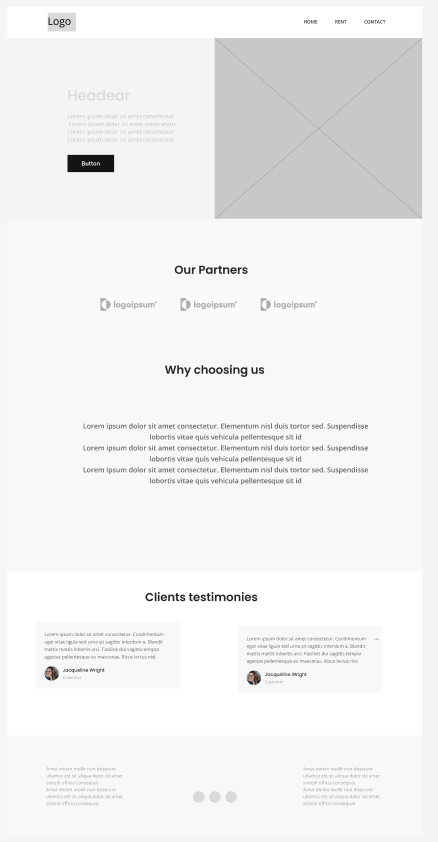
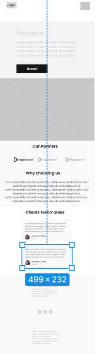

Commissionary House
Commissionary House is a digital platform designed to connect tenants with available rental properties in their area. Users can easily search for houses or apartments, view details and images, and pay rent securely every month—all from one place. Whether you're a student, a professional, or a family, Commissionary House simplifies the rental experience with transparency and convenience.
The website will:
Desktop View:
Mobile View:
